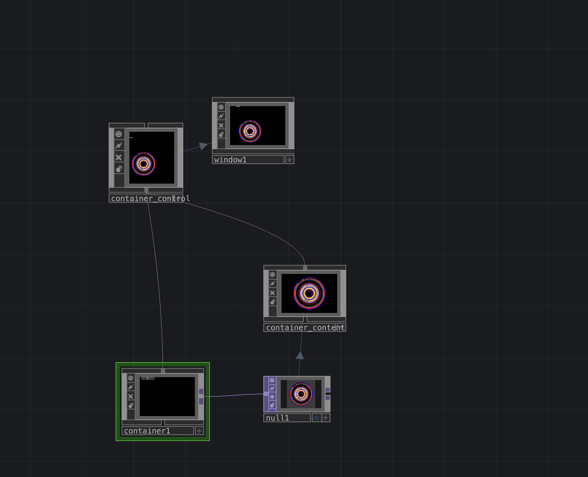

Charles Gaines Inspirartion Piece
Art By Charles Gaines
ArtWork

The art work I choose to Inspire me by Charles Gaines
Summary
I chose the above piece by Charles Gaines titled Untitled (1969–1972). In my project and video, you can see that I created circles with different colors. Gaines’ work features overlapping colors and grouping, which I also incorporated into my piece. I used my own videos and applied randomly selected colors while organizing them into grouped circular forms.
Process of Creating this Exercise
The TOPs I used in this project include Movie File In, Ramp, Circle, Fit, Out, Composite, Switch, and Null.
-
First, I selected the videos I wanted to use. I chose two videos from my camera, both featuring my dog. I connected them to a Composite TOP and set the operation to "Add." Then, I connected that result to another Composite TOP with a Circle TOP. This was the only time I used the "Multiply" operator in this project.
-
Next, I created two circles with the same dimensions but different colors. I connected them using a Cross TOP and then combined them with the previous composition. I repeated this process multiple times, layering circles and video textures. I experimented with different colors and ensured the circles became progressively smaller to create a grouped effect.
I then connected the two movie inputs to a Switch TOP. A slider was connected through a Math CHOP, which remapped the range from 0–1 to 0–2. This allowed me to switch between the inputs interactively.
Only one circle had a visible fill color, while the others had their alpha set to 0. The main circle was purple because my dog, Violet, is featured prominently, making it a meaningful central element. This was then connected to a Composite TOP, followed by a Fit TOP, and finally an Out TOP.
-
At a higher level, I organized everything inside containers. The Out TOP was connected to a Null TOP, which was then connected to another container. These containers were combined into a third container that aligns all elements. This final container is what the window references.
-
Finally, I adjusted the resolution. The Movie File In TOPs were set to 1280×720, while the circles were set to 720×720 to ensure they remained perfectly circular rather than appearing stretched.
Process & Results
TouchDesigner Network

Shows how everything is connected, including circles, composites, ramps, and sliders.
TouchDesigner Network

Shows the window-level layout and how the controls are linked.
Interactive Demonstration
Watch the interactive Charles Gaines Project demo on YouTube →References
- In addition to the TouchDesigner documentation, I explored and experimented with the Composite TOP to better understand its functionality.